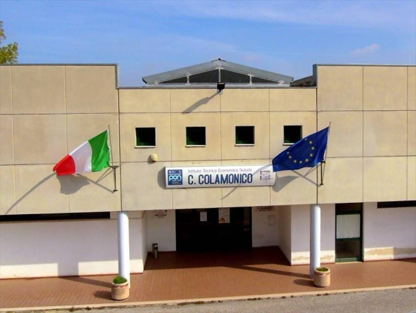

IISS COLAMINICO
Come accennato nella categoria "chi sono", frequento l'istituto tecnico tecnologico professionele presso Acquaviva delle Fonti.
nel mio caso io ho scelto di frequentare l'infomatica, al momento sono la terzo anno, dove sto imparando a programare con c++, html, css...

powered by: Giuseppe Marinelli
section: 3b inf
e-mail: ombraoskura.github.io